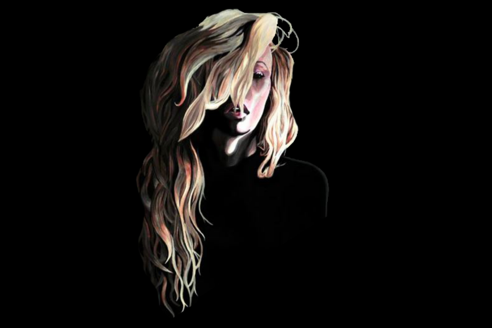
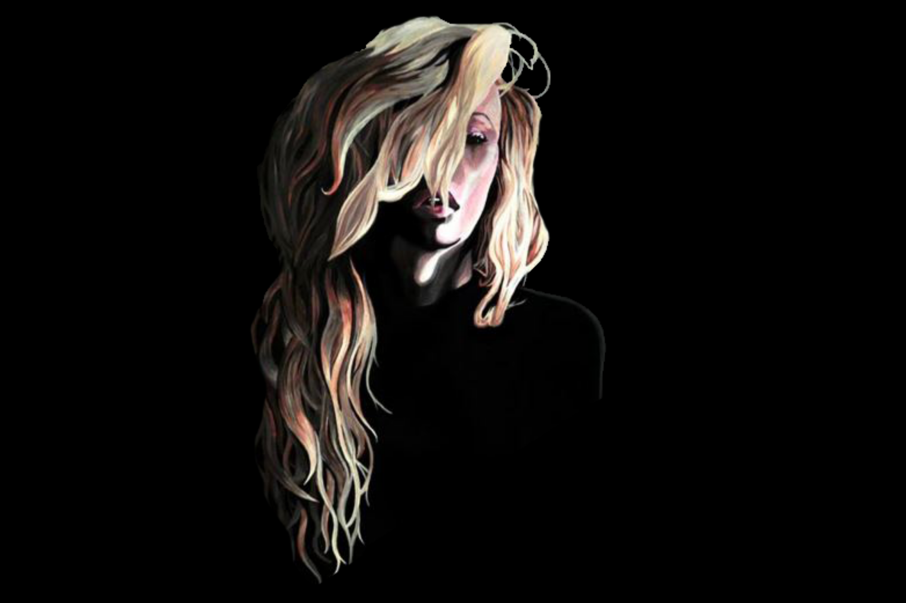

Madison Colvin
Art
Traditional Mediums
Artist Background
From a young age, art has always been an important part of my life. Creating and designing new things is a passion of mine and in my free time I love to draw with a variety of mediums to create cohesive, vibrant, and surreal designs. Some of my favorite mediums to work with include:
- Colored Pencils
- Acrylic Paint
- Oil Paint
- Pen and Ink
- Watercolor
- Copic Markers
My parents used to tell me to figure out what you love to do and then make a career out of it. From a very young age,
even before I started school, I was absorbed in dreaming up new ideas, faces, and places to show the world. Soon,
it became clear that what many thought was just a “stage” or an “obsession,” was actually a passion of mine that
would continue throughout my lifetime.
In high school and throughout my early college career, I sold my artwork at Village Art in the Park’s weekly art show located in Leavenworth, WA. In addition to selling at art shows, in the past I worked as an Art Instructor teaching a series of weekly classes, entered design contests, and completed various commission pieces for clients. These experiences have helped shape me as an artist and have prepared me for a creative career path.
Before entering the digital sphere I created artwork using primarily only traditional mediums. Some samples of my artwork are showcased below.


 
